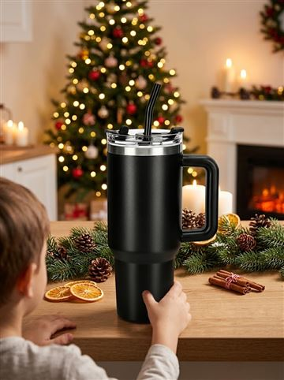
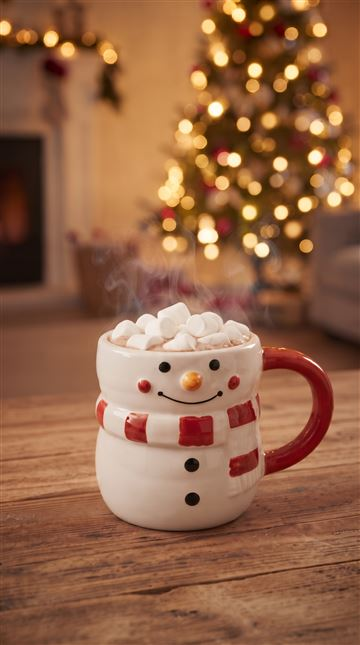
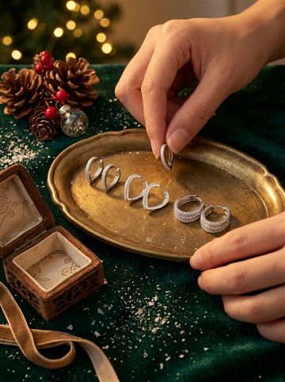
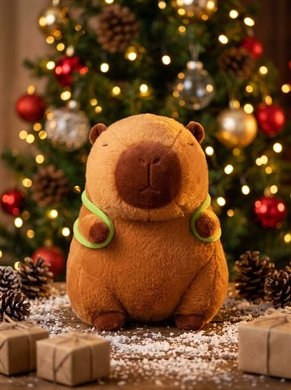
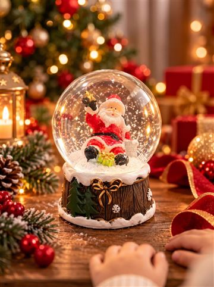
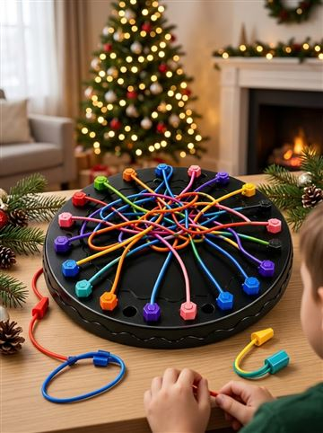
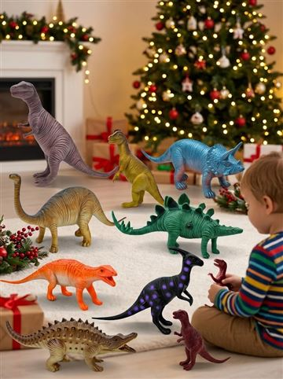

Presentes de Natal até R$ 50: 8 ideias que todo mundo gosta
#publi — Os botões são links de afiliado do Mercado Livre: posso ganhar uma comissão, sem custo extra pra você. Preço e prazo mudam: confira no anúncio.
Procurando presente de Natal até R$ 50? Separei 8 ideias que vendem muito no Mercado Livre, com nota boa, e que servem pra quase todo mundo: colega de trabalho, amigo secreto, sogra, criança.
Os preços mudam toda semana, então use os valores como faixa e confira o do dia no link.
☕ Pra quem ama café: caneca 3D ou kit de canecas de vidro.
🥤 Pra qualquer pessoa: copo térmico 1,2 L.
💎 Pra ela: brincos de prata 925.
🧸 Pra criança: capivara de pelúcia.
Resumo das ideias
| Presente | Pra quem | Entrega |
|---|---|---|
| Copo térmico 1,2 L | Todo mundo | FULL |
| Caneca 3D de Natal | Amigo secreto | — |
| Brincos prata 925 | Mulheres | FULL |
| Capivara de pelúcia | Crianças | FULL |
| Globo de neve | Decoração/presente | FULL |
| Jogo desafio da corda | Família | FULL |
| Kit 6 canecas cappuccino | Casa nova / café | FULL |
| Kit 8 dinossauros | Crianças 3–6 anos | — |
As 8 ideias

Copo térmico 1,2 L inox com canudo
Mais de 50 mil vendidos, nota 4,9. Presente que a pessoa usa todo dia.
Ver preço no Mercado Livre
Caneca 3D de Natal (4 modelos)
Cerâmica, vai no micro-ondas e na lava-louças. Boneco de neve ou Papai Noel.
Ver preço no Mercado Livre
Brincos argola de prata 925
Prata 925 com zircônia: parece presente caro.
Ver preço no Mercado Livre
Capivara de pelúcia gigante
Antialérgica, a febre do ano entre as crianças.
Ver preço no Mercado Livre


Como embrulhar gastando pouco
Uma sacolinha térmica de Natal já vem decorada e ainda serve depois. Veja mais ideias de amigo secreto.
Perguntas frequentes
Qual o melhor presente de Natal até 50 reais?
Copo térmico, caneca 3D e brincos de prata estão entre os mais vendidos e bem avaliados. Confira o preço do dia.
Esses presentes chegam antes do Natal?
Os marcados como FULL costumam chegar rápido; o prazo depende do CEP. A partir de meados de dezembro, prefira FULL.
Leia também
- Árvore de Natal completa barata: 3 opções que chegam rápido
- Presente de amigo secreto barato: ideias de R$ 20 a R$ 50
- Presente de Natal pra mãe: ideias que ela vai usar
Mais achadinhos na nossa página de ofertas.